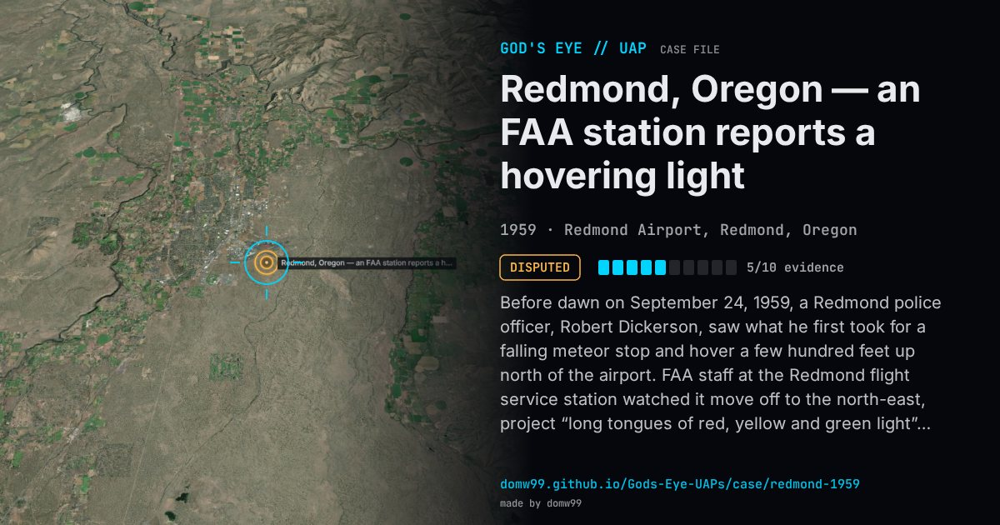

Redmond, Oregon — an FAA station reports a hovering light

Before dawn on September 24, 1959, a Redmond police officer, Robert Dickerson, saw what he first took for a falling meteor stop and hover a few hundred feet up north of the airport. FAA staff at the Redmond flight service station watched it move off to the north-east, project “long tongues of red, yellow and green light”, and, when a fast aircraft approached, rise into the clouds, then reappear to the south. The station reported it to Seattle Air Route Traffic Control Center at 1310 GMT; Seattle’s log said the Klamath Falls ground-controlled intercept radar had it, and F-102s were scrambled from Portland. Seattle later passed on radar reports of an object 25 miles from Redmond at altitudes up to 52,000 ft. The FAA’s logged account, sent to NICAP, made the case famous; the Air Force’s answers changed from a balloon to insufficient data to Venus, and in 1960 Blue Book concluded that the light was Venus and that no radar track had been confirmed.
Explanation
The Air Force first called it a balloon, then said there was insufficient information, and in 1960 Blue Book concluded that the light was the planet Venus, very bright and low in the east, distorted by refraction, possibly with Regulus. It found no evidence that the Klamath Falls radar had tracked it or that the fighters had seen anything, and a later review suggests the radar return was a false target over a gap-filler site during a temperature inversion. NICAP held that the FAA log shows radar contact and an attempted intercept.
What was seen
Shape: A bright, round, flat light that changed from white to reddish-orange, with tongues of red, yellow and green light
Witnesses: Patrolman Robert Dickerson of the Redmond police; FAA flight service specialists at the airport
Duration: Minutes in sight; the radar reports lasted about two hours
Sources
- Project Blue Book file, Redmond, September 1959 (Internet Archive)
- FAA Redmond Communication Station letter, January 15, 1960 (transcribed)
- A review of the Redmond case: Venus and a false radar target (German translation)
Browse
- United States
- 1950s
- Disputed
- Radar-visual cases
- Official government documents
- Radar tracking
- Police witnesses
- Lights and fireballs
- Spheres and orbs